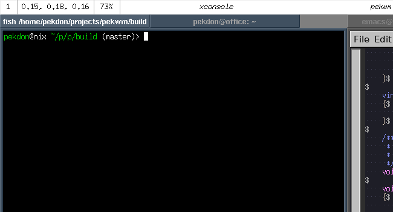

pekwm_panel in the works!
After rebooting the pekwm development, the activity from users on Github page has increased and in one of the recent issues a comment was added noting that it was hard to know iconified windows exist.
The seasoned users know of the Icon menu, however, as a new pekwm user it is less than obvious how one should know the iconfied windows exist. As it was noted this was not a problem in other environments where a panel is available listing all clients I decided to create a pekwm_panel.
Had some spare time this weekend and have hacked together the start of pekwm_panel as shown below:

The panel currently support the following Widgets:
- ClientList, list the clients on the current workspace.
- DateTime, display strftime (3) formatted date and time.
- ExternalData, display text from external command refreshed at given intervals.
- WorkspaceNumber, display current workspace.
The Widgets and Commands are user configurable and the current default configuration (with added descriptive comments) in pekwm is:
Commands {
# run uptime command every 15 seconds, drop everything up until :
# replacing it with load making the resulting output:
#
# load 1,00 1,00 1,00
#
# The output is parsed in such a way the text up until space is
# treated as a field name which can be referenced by ExternalData
# widgets.
#
Command = "uptime | sed 's/.*:/load/'" {
Interval = "15"
}
}
Widgets {
WorkspaceNumber {
# allocate as much size as required using current theme font
Size = "Required"
}
ExternalData = "load" {
# allocate as much size as the text take
Size = "TextWidth _0.00, 0.00, 0.00_"
}
ClientList {
# use reminding space, split evenly between all widgets with *
Size = "*"
}
DateTime = "%Y-%m-%d %H:%M" {
Size = "Required"
Interval = "60"
}
}
More Widgets will come and more interactivity on the Widgets will be implemented. Next up, however, is getting the theme part specified which will be part of the standard pekwm theme files.